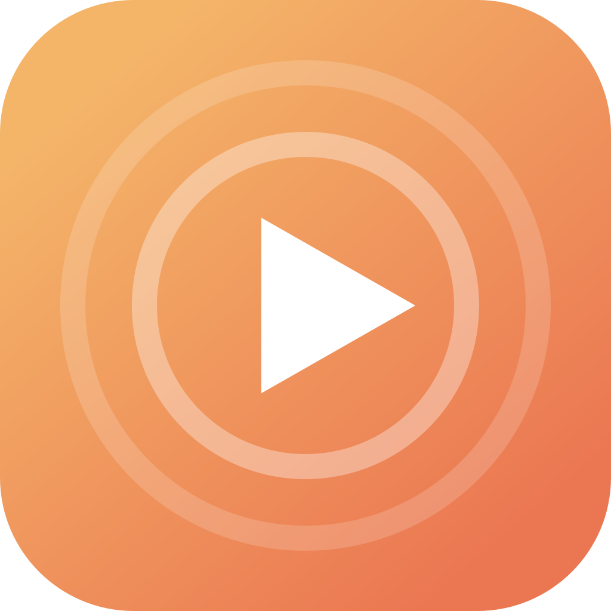

Direct LAN streaming
The movie goes straight from your Mac to the TV with HTTP byte ranges — fast starts, snappy seeking, no cloud.

DropcastNative macOS app · Apple Silicon
Dropcast is a small, native macOS app that streams a local movie straight to your Chromecast or Google Cast TV — over your own Wi-Fi, with subtitles, and no upload.
Why Dropcast
The file never leaves your machine. Dropcast serves it straight to the TV over the LAN, so playback starts instantly and seeking is snappy.
The movie goes straight from your Mac to the TV with HTTP byte ranges — fast starts, snappy seeking, no cloud.
Google Cast discovery surfaces every Chromecast and Cast-enabled TV on your Wi-Fi in seconds.
Auto-matches sidecars, reads embedded text tracks, and lets you switch or turn them off during playback.
FFmpeg 6.1.6 is packed into the app for embedded subtitle discovery. No system install or extra dependencies.
Dropcast streams your file exactly as it is. What plays on your TV is the original, untouched.
Play, pause, seek, change the volume, switch subtitles, or stop casting without leaving the app.
A drop, a picker, a movie
MP4, MKV or MOV — streamed
straight to your TV.
Download the native app from GitHub Releases, move it to Applications, and start casting. No sign-up, no telemetry, no upload — ever.
Apple Silicon · GPL-3.0-or-later · direct streaming, never transcodes.Movie night in three steps
Prefer a terminal? A CLI is included as a bonus →